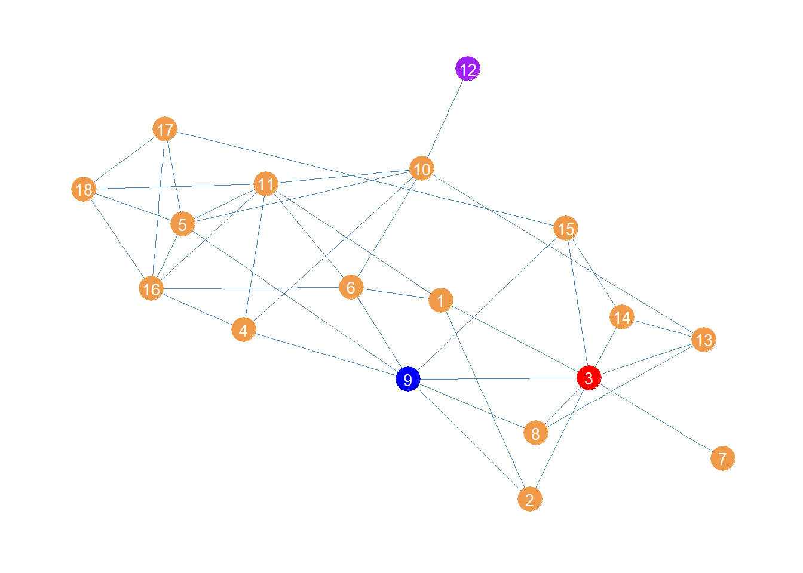

Centrality
In this handout we will go through the basic centrality metrics. Particularly, the “big three” according to Freeman (1979), namely, degree, closeness (in two flavors) and betweenness.
We first load our trusty Pulp Fiction data set from the networkdata package, which is an undirected graph of character scene co-appearances in the film:
Degree Centrality
Degree centrality is the simplest and most straightforward measure. In fact, we are already computed in handout 1 since it is the same as obtaining the graph’s degree sequence. So the igraph function degree would do it as we already saw.
Here we follow a different approach using the row (or column) sums of the graph’s adjacency matrix:
BRETT BUDDY BUTCH CAPT KOONS ED SULLIVAN
7 2 17 5 2
ENGLISH DAVE ESMARELDA FABIENNE FOURTH MAN GAWKER #2
4 1 3 2 3
HONEY BUNNY JIMMIE JODY JULES LANCE
8 3 4 16 4
MANAGER MARSELLUS MARVIN MAYNARD MIA
5 10 6 3 11
MOTHER PATRON PEDESTRIAN PREACHER PUMPKIN
5 5 3 3 8
RAQUEL ROGER SPORTSCASTER #1 SPORTSCASTER #2 THE GIMP
3 6 2 1 2
THE WOLF VINCENT WAITRESS WINSTON WOMAN
3 25 4 3 5
YOUNG MAN YOUNG WOMAN ZED
4 4 2 The igraph function as_adjancency_matrix doesn’t quite return a regular R matrix object, so we have to further coerce the resulting object into a numerical matrix containing zeroes and ones using the as.matrix function in line 2. Then we can apply the native rowSums function to obtain each node’s degree. Note that this is same output we got using the degree function before.
Indegree and Outdegree
The movie network is based on the relationship of co-appearance in a scene which by nature lacks any natural directionality (it’s a symmetric relation) and can therefore be represented in an undirected graph. The concepts of in and outdegree, by contrast, are only applicable to directed relations. So to illustrate them, we need to switch to a different source of data.
We pick an advice network which is a classical directed kind of (asymmetric) relation. I can give advice to you, but that doesn’t necessarily mean you can give advice to me. The networkdata package contains one such data set collected in the late 80s early 1990s in a New England law firm (see the description here), called law_advice:
+ 71/71 vertices, from d1a9da7:
[1] 1 2 3 4 5 6 7 8 9 10 11 12 13 14 15 16 17 18 19 20 21 22 23 24 25
[26] 26 27 28 29 30 31 32 33 34 35 36 37 38 39 40 41 42 43 44 45 46 47 48 49 50
[51] 51 52 53 54 55 56 57 58 59 60 61 62 63 64 65 66 67 68 69 70 71$status
[1] 1 1 1 1 1 1 1 1 1 1 1 1 1 1 1 1 1 1 1 1 1 1 1 1 1 1 1 1 1 1 1 1 1 1 1 1 2 2
[39] 2 2 2 2 2 2 2 2 2 2 2 2 2 2 2 2 2 2 2 2 2 2 2 2 2 2 2 2 2 2 2 2 2
$gender
[1] 1 1 1 1 1 1 1 1 1 1 1 1 1 1 1 1 1 1 1 1 1 1 1 1 1 1 2 1 2 1 1 1 1 2 1 1 1 2
[39] 2 1 1 1 2 2 1 2 1 2 1 1 2 1 1 1 1 1 2 1 2 2 2 1 1 2 1 1 2 1 2 1 2
$office
[1] 1 1 2 1 2 2 2 1 1 1 1 1 1 2 3 1 1 2 1 1 1 1 1 1 2 1 1 2 1 2 2 2 2 1 2 1 3 1
[39] 1 1 1 1 1 3 1 2 3 1 1 2 2 1 1 1 1 1 1 2 2 1 1 1 2 1 1 1 1 1 1 1 1
$seniority
[1] 31 32 13 31 31 29 29 28 25 25 23 24 22 1 21 20 23 18 19 19 17 9 16 15 15
[26] 15 13 11 10 7 8 8 8 8 8 5 5 7 6 6 5 4 5 5 3 3 3 1 4 3
[51] 4 4 10 3 3 3 3 3 2 2 2 2 2 2 2 1 1 1 1 1 1
$age
[1] 64 62 67 59 59 55 63 53 53 53 50 52 57 56 48 46 50 45 46 49 43 49 45 44 43
[26] 41 47 38 38 39 34 33 37 36 33 43 44 53 37 34 31 31 47 53 38 42 38 35 36 31
[51] 29 29 38 29 34 38 33 33 30 31 34 32 29 45 28 43 35 26 38 31 26
$practice
[1] 1 2 1 2 1 1 2 1 2 2 1 2 1 2 2 2 2 1 2 1 1 1 1 1 2 1 1 2 2 1 1 1 1 2 2 1 2 1
[39] 1 1 1 2 1 2 2 2 1 2 1 2 1 1 2 1 1 1 1 1 1 2 2 2 2 2 1 1 1 1 1 2 1
$law_school
[1] 1 1 1 3 2 1 3 3 1 3 1 2 2 1 3 1 1 2 1 1 2 3 2 2 2 3 1 2 3 3 2 3 3 2 3 3 3 2
[39] 1 1 2 2 2 1 3 2 3 3 2 2 3 3 3 3 3 2 2 3 2 2 3 2 2 2 3 3 2 3 3 2 2We can see that the graph has 71 vertices, and that there are various attributes associated with each vertex, like gender, age, seniority, status in the law firm, etc. We can query those attributes using the igraph function vertex_attr, which takes the graph object as input.
Subsetting the Graph According to a Node Attribute
To keep things manageable, we will restrict our analysis to partners. To do that we need to select the subgraph that only includes the vertices with value of 1 in the “status” vertex attribute. From the data description, we know the first 36 nodes (with value of 1 in the status attribute) are the law firm’s partners (the rest are associates). In igraph we can do this as using the subgraph function:
+ 36/36 vertices, from cb628e7:
[1] 1 2 3 4 5 6 7 8 9 10 11 12 13 14 15 16 17 18 19 20 21 22 23 24 25
[26] 26 27 28 29 30 31 32 33 34 35 36 [1] 1 1 1 1 1 1 1 1 1 1 1 1 1 1 1 1 1 1 1 1 1 1 1 1 1 1 1 1 1 1 1 1 1 1 1 1The first line just tells igraph to generate the subgraph containing the first 36 nodes (the partners). The subgraph function thus takes two main inputs: The graph object, and then a vector of node ids (or node labels) telling the function which nodes to select to create the node-induced subgraph.
Of course we already knew from the data description that the first 36 nodes where the partners. But let’s say we have a large data set and we don’t know which nodes are the partners. A smarter way of selecting a subgraph based on a node attribute is as follows:
+ 36/36 vertices, from cb691bb:
[1] 1 2 3 4 5 6 7 8 9 10 11 12 13 14 15 16 17 18 19 20 21 22 23 24 25
[26] 26 27 28 29 30 31 32 33 34 35 36The first line using the native R vector function which allowing us to subset a vector based on a logical condition. The function takes a vector followed by a logical condition as input, and returns the position of the vector elements that meet that condition. In this case, we took the vector of values for the attribute of status and selected the node ids where status is equal to 1. We then fed that vector to the subgraph function in line 2.
We could do this with any other attribute:
[1] 1 2 3 4 5 6 7 8 9 10 12 13 14 38 44+ 15/15 vertices, from cb6eeb1:
[1] 1 2 3 4 5 6 7 8 9 10 11 12 13 14 15Here we selected the subgraph (called “og”, get it, get it) formed by the subset of nodes over the age of 50 at the firm. The values of the vector older tell us which of the 71 members meet the relevant condition.
Computing in and outdegree
OK, going back to the partners subgraph, we can now create our (asymmetric) adjacency matrix and compute the row and column sums:
[1] 3 7 7 17 4 0 4 2 3 7 5 18 11 13 10 19 17 5 21 10 9 12 9 16 8
[26] 22 18 22 13 15 16 9 15 6 15 7 [1] 18 17 8 14 10 17 4 8 10 6 11 14 14 12 15 13 21 7 7 17 11 10 2 14 7
[26] 20 2 14 12 11 8 13 2 16 8 2Note that in contrast to the undirected case the row and column sums give you two different sets of numbers. The row sums provide the directed graph’s outdegree set (number of outgoing links incident to each node), and the column sums provide the graph’s indegree set (number of incoming links incident to each node). So if you are high in the first vector, you are an advice giver (perhaps indicating informal status or experience) and if you are high in the second you are advice taker.
Of course igraph has a dedicated function for this, which is just our old friend degree with an extra option mode, indicating whether you want the in or outdegrees:
[1] 3 7 7 17 4 0 4 2 3 7 5 18 11 13 10 19 17 5 21 10 9 12 9 16 8
[26] 22 18 22 13 15 16 9 15 6 15 7 [1] 18 17 8 14 10 17 4 8 10 6 11 14 14 12 15 13 21 7 7 17 11 10 2 14 7
[26] 20 2 14 12 11 8 13 2 16 8 2Note that the graph attributes are just vectors of values, and can be accessed from the graph object using the $ operator attached to the V() function as we did above.
So if we wanted to figure out the correlation between some vertex attribute and in or out degree centrality, all we need to do is correlate the two vectors:
Which tells us that at least in this case, younger partners are more sought after as sources of advice than older partners.
Closeness Centrality
Recall that the closeness centrality is defined as the inverse of the sum of the lengths of shortest paths from each node to every other node. That means that to compute it, we first need to calculate the shortest path matrix. Then, we sum the rows (or columns) and then we obtain the inverse to get the closeness of each node:
S <- distances(g) #length of shortest paths matrix
d.sum <- rowSums(S)
close1 <- round(1/d.sum, 4)
close1 BRETT BUDDY BUTCH CAPT KOONS ED SULLIVAN
0.0125 0.0108 0.0143 0.0125 0.0108
ENGLISH DAVE ESMARELDA FABIENNE FOURTH MAN GAWKER #2
0.0105 0.0070 0.0096 0.0104 0.0097
HONEY BUNNY JIMMIE JODY JULES LANCE
0.0114 0.0093 0.0093 0.0132 0.0093
MANAGER MARSELLUS MARVIN MAYNARD MIA
0.0111 0.0104 0.0103 0.0098 0.0115
MOTHER PATRON PEDESTRIAN PREACHER PUMPKIN
0.0125 0.0111 0.0097 0.0097 0.0114
RAQUEL ROGER SPORTSCASTER #1 SPORTSCASTER #2 THE GIMP
0.0105 0.0125 0.0096 0.0057 0.0073
THE WOLF VINCENT WAITRESS WINSTON WOMAN
0.0056 0.0139 0.0083 0.0105 0.0125
YOUNG MAN YOUNG WOMAN ZED
0.0083 0.0083 0.0073 Of course, we could have just used the available function in igraph and computed the closeness centrality directly from the graph object using the function closeness:
BRETT BUDDY BUTCH CAPT KOONS ED SULLIVAN
0.0125 0.0108 0.0143 0.0125 0.0108
ENGLISH DAVE ESMARELDA FABIENNE FOURTH MAN GAWKER #2
0.0105 0.0070 0.0096 0.0104 0.0097
HONEY BUNNY JIMMIE JODY JULES LANCE
0.0114 0.0093 0.0093 0.0132 0.0093
MANAGER MARSELLUS MARVIN MAYNARD MIA
0.0111 0.0104 0.0103 0.0098 0.0115
MOTHER PATRON PEDESTRIAN PREACHER PUMPKIN
0.0125 0.0111 0.0097 0.0097 0.0114
RAQUEL ROGER SPORTSCASTER #1 SPORTSCASTER #2 THE GIMP
0.0105 0.0125 0.0096 0.0057 0.0073
THE WOLF VINCENT WAITRESS WINSTON WOMAN
0.0056 0.0139 0.0083 0.0105 0.0125
YOUNG MAN YOUNG WOMAN ZED
0.0083 0.0083 0.0073 Once we have the closeness centrality values, we are interested in who are the top nodes. The following code creates a table with the top five:
library(kableExtra)
close2 <- sort(close2, decreasing = TRUE)
close2 <- data.frame(close2[1:5])
kbl(close2, format = "pipe", align = c("l", "c"),
col.names = c("Character", "Closeness"),
caption = "Top Five Closeness Characters in Pulp Fiction Network.") %>%
kable_styling(bootstrap_options = c("hover", "condensed", "responsive"))| Character | Closeness |
|---|---|
| BUTCH | 0.0143 |
| VINCENT | 0.0139 |
| JULES | 0.0132 |
| BRETT | 0.0125 |
| CAPT KOONS | 0.0125 |
It makes sense that the three main characters are also the ones that are at closest distances from everyone else!
Edge Closeness
Bröhl and Lehnertz (2022) define the closeness of an edge as a function of the closeness of the two nodes incident to it. An edge \(e_{jk}\) linking vertex \(v_j\) to \(v_k\) has high closeness whenever vertices \(v_j\) and \(v_k\) also have high closeness.
More specifically, the closeness centrality of an edge is proportional to the ratio of the product of the closeness of the two nodes incident to it divided by their sum:
\[ C(e_{jk}) = (E - 1)\frac{C(v_j) \times C(v_k)}{C(v_j)+C(v_k)} \]
Note that the equation normalizes the ratio of the product to the sum of the vertex closeness centralities by the number of edges minus one.
To compute edge closeness in a real network, we can use the same approach to data wrangling we used to compute the degree correlation in Handout 1. The goal is to create an edge list data frame containing five columns. The ids of the two nodes in the edge, the closeness centralities of the two nodes in the edge, and the closeness centrality of the edge calculated according to the above equation.
In the Pulp Fiction network this looks like:
library(dplyr)
g.el <- as_edgelist(g) #transforming graph to edgelist
c <- round(closeness(g), 3) #closeness centrality vector
c.dat <- data.frame(name1 = names(c), name2 = names(c), c)
el.temp <- data.frame(name2 = g.el[, 2]) %>%
left_join(c.dat, by = "name2") %>%
dplyr::select(c("name2", "c")) %>%
rename(c2 = c)
c.el <- data.frame(name1 = g.el[, 1]) %>%
left_join(c.dat, by = "name1") %>%
dplyr::select(c("name1", "c")) %>%
rename(c1 = c) %>%
cbind(el.temp) %>%
mutate(e.clos = round((ecount(g)-1)*(c1*c2)/(c+c2), 3))
head(c.el) name1 c1 name2 c2 e.clos
1 BRETT 0.013 MARSELLUS 0.010 0.571
2 BRETT 0.013 MARVIN 0.010 0.625
3 BRETT 0.013 ROGER 0.013 0.632
4 BRETT 0.013 VINCENT 0.014 0.681
5 BUDDY 0.011 MIA 0.011 0.555
6 BUDDY 0.011 VINCENT 0.014 0.622To create a table of the top five closeness centrality edges, we just order the data frame by the last column and table it:
c.el <- c.el[order(c.el$e.clos, decreasing = TRUE), ] %>%
dplyr::select(c("name1", "name2", "e.clos"))
kbl(c.el[1:5, ], format = "pipe", align = c("l", "l", "c"),
col.names = c("i", "j", "Edge Clos."), row.names = FALSE,
caption = "Edges Sorted by Closeness in the Pulp Fiction Network") %>%
kable_styling(bootstrap_options = c("hover", "condensed", "responsive"))| i | j | Edge Clos. |
|---|---|---|
| BUTCH | VINCENT | 0.900 |
| BRETT | BUTCH | 0.875 |
| MOTHER | VINCENT | 0.875 |
| BUTCH | MIA | 0.864 |
| JULES | PUMPKIN | 0.850 |
Interestingly, the top closeness edges tend to bring somewhat strange bedfellows, characters that themselves don’t spend much time together in the film (e.g., the Butch/Vincent interaction is relatively brief and somewhat embarrassing for Vincent) but who themselves can reach other character clusters in the film via relatively short paths.
Closeness Centrality in Directed Graphs
What about closeness centrality for a directed network? Let us see how this works using a subgraph of the advice network, this time selecting just women under the age of forty:
women <- which(V(law_advice)$gender == 2)
wg <- subgraph(law_advice, women)
young <- which(V(wg)$age < 40)
wg <- subgraph(wg, young)
V(wg)+ 12/12 vertices, from cbfef19:
[1] 1 2 3 4 5 6 7 8 9 10 11 12This network is small enough that a plot could be informative about its structure. Let us plot it using the package ggraph, a visualization package that follows the same principles as the ggplot grammar of graphics but for network graphs (see here).
#install.packages("ggraph")
library(ggraph)
p <- ggraph(wg, layout = 'auto')
p <- p + geom_edge_parallel(color = "steelblue", edge_width = 0.5,
arrow = arrow(length = unit(2.5, 'mm')),
end_cap = circle(4, 'mm'),
sep = unit(3, 'mm'))
p <- p + geom_node_point(aes(x = x, y = y), size = 8, color = "tan2")
p <- p + geom_node_text(aes(label = 1:vcount(wg)), size = 4, color = "white")
p <- p + theme_graph()
pNow a question we might ask is who has the greatest closeness centrality in this advice network. We could proceed as usual and compute the geodesic distances between actors:
[,1] [,2] [,3] [,4] [,5] [,6] [,7] [,8] [,9] [,10] [,11] [,12]
[1,] 0 1 2 1 3 3 4 2 2 3 3 3
[2,] 1 0 2 1 2 3 3 1 1 3 3 3
[3,] 2 2 0 1 1 1 2 2 3 1 1 1
[4,] 1 1 1 0 2 2 3 2 2 2 2 2
[5,] 3 2 1 2 0 1 1 1 2 2 2 2
[6,] 3 3 1 2 1 0 2 2 3 1 2 1
[7,] 4 3 2 3 1 2 0 2 3 3 3 3
[8,] 2 1 2 2 1 2 2 0 1 3 3 3
[9,] 2 1 3 2 2 3 3 1 0 4 4 4
[10,] 3 3 1 2 2 1 3 3 4 0 1 1
[11,] 3 3 1 2 2 2 3 3 4 1 0 1
[12,] 3 3 1 2 2 1 3 3 4 1 1 0Note that this is not quite right. In igraph the default settings of the distance function treats the graph as undirected. So it doesn’t use the strict directed paths, but it just treats them all as semi-paths ignoring direction. That is why, for instance, it counts node 1 as being “adjacent” to node 4 even though there is only one incoming link from 4 to 1 and why the whole matrix is symmetric, when we know from just eyeballing the network that there is a lot of asymmetry in terms of who can reach who via directed paths.
To get the actual directed distance matrix, we need to specify the “mode” option, asking whether we want in or out paths. Here, let’s select out-paths:
[,1] [,2] [,3] [,4] [,5] [,6] [,7] [,8] [,9] [,10] [,11] [,12]
[1,] 0 1 Inf Inf Inf Inf Inf Inf Inf Inf Inf Inf
[2,] 1 0 Inf Inf Inf Inf Inf Inf Inf Inf Inf Inf
[3,] 2 2 0 1 Inf 1 Inf Inf Inf Inf Inf Inf
[4,] 1 1 1 0 Inf 2 Inf Inf Inf Inf Inf Inf
[5,] 3 2 1 2 0 1 1 1 2 Inf Inf Inf
[6,] 3 3 1 2 Inf 0 Inf Inf Inf Inf Inf Inf
[7,] 4 3 2 3 1 2 0 2 3 Inf Inf Inf
[8,] 2 1 Inf Inf Inf Inf Inf 0 1 Inf Inf Inf
[9,] 2 1 Inf Inf Inf Inf Inf 1 0 Inf Inf Inf
[10,] 3 3 1 2 Inf 1 Inf Inf Inf 0 1 2
[11,] 3 3 1 2 Inf 2 Inf Inf Inf 1 0 1
[12,] 3 3 1 2 Inf 1 Inf Inf Inf 1 1 0This is better but introduces a problem. The directed graph is not strongly connected, so it means that some nodes cannot reach other ones via a directed path of any length. That means that the geodesic distances from a node to an unreachable node is coded as “infinite” (Inf). The problem with infinity is that it gets in the way of calculating sums of distances, a requirement for the closeness centrality.
Adding infinity to a number just returns infinity so all the rows with at least one “Inf” in the distance matrix get an Inf for the row sum. In this case that’s all of them. A bummer.
Harmonic Centrality
But dont’ worry there’s a patch. It is called the harmonic centrality (Rochat 2009).1 This is a variation on the closeness centrality that works whether you are working with connected or disconnected graphs (or in the case of directed graphs regardless of whether the graph is strongly or weakly connected), and therefore regardless of whether the geodesic distance matrix contains Infs.2
The main difference between the harmonic and regular closeness centrality is that instead of calculating the inverse of the sum of the distances for each node, we calculate the sum of the inverses:
[,1] [,2] [,3] [,4] [,5] [,6] [,7] [,8] [,9] [,10] [,11] [,12]
[1,] 0.00 1.00 0.0 0.00 0 0.0 0 0.0 0.00 0 0 0.0
[2,] 1.00 0.00 0.0 0.00 0 0.0 0 0.0 0.00 0 0 0.0
[3,] 0.50 0.50 0.0 1.00 0 1.0 0 0.0 0.00 0 0 0.0
[4,] 1.00 1.00 1.0 0.00 0 0.5 0 0.0 0.00 0 0 0.0
[5,] 0.33 0.50 1.0 0.50 0 1.0 1 1.0 0.50 0 0 0.0
[6,] 0.33 0.33 1.0 0.50 0 0.0 0 0.0 0.00 0 0 0.0
[7,] 0.25 0.33 0.5 0.33 1 0.5 0 0.5 0.33 0 0 0.0
[8,] 0.50 1.00 0.0 0.00 0 0.0 0 0.0 1.00 0 0 0.0
[9,] 0.50 1.00 0.0 0.00 0 0.0 0 1.0 0.00 0 0 0.0
[10,] 0.33 0.33 1.0 0.50 0 1.0 0 0.0 0.00 0 1 0.5
[11,] 0.33 0.33 1.0 0.50 0 0.5 0 0.0 0.00 1 0 1.0
[12,] 0.33 0.33 1.0 0.50 0 1.0 0 0.0 0.00 1 1 0.0Note that in this matrix of inverse distances, the closest (adjacent) nodes get the maximum score of one, and nodes farther apart when smaller scores (approaching zero). More importantly, those pesky Infs disappear (!) because unreachable directed pairs of nodes get the lowest score, corresponding to \(1/\infty = 0\). Turns out the mathematics of infinity weren’t our enemy after all.
Also note that the reachability relation expressed in this matrix is asymmetric: So node 4 and reach node 1 (there is a directed tie from 4 to 1), but node 1 cannot reach 4. This is precisely what we want.
Once we have this matrix of inverse distances, we can then we can compute the harmonic centrality the same way as regular closeness by adding up the row scores for each node and dividing by the number of nodes minus one (to get the average):
[1] 0.09 0.09 0.27 0.32 0.53 0.20 0.34 0.23 0.23 0.42 0.42 0.47We can see that the highest harmonic closeness centrality node is 5, followed by 12. Here’s a plot of the network highlighting the highest harmonic (closeness) centrality node.
col <- rep("tan2", vcount(wg)) #creating node color vector
col[which(d.harm == max(d.harm))] <- "red" #changing color of max centrality node to red
p <- p + geom_node_point(aes(x = x, y = y), size = 8, color = col)
p <- p + geom_node_text(aes(label = 1:vcount(wg)), size = 4, color = "white")
pOf course, igraph has a built in function to calculate the harmonic centrality called (you guessed it) harmonic_centrality:
[1] 0.09 0.09 0.27 0.32 0.53 0.20 0.34 0.23 0.23 0.42 0.42 0.47Which gives us the same results.
Betweenness
We finally come to betweenness centrality. Recall that the key conceptual distinction between closeness and betweenness according to Freeman (1979) is that between (pun intended) the capacity to reach others quickly (e.g., via the shortest paths) and the capacity to intermediate among those same paths. High betweenness nodes control the flow of information in the network between other nodes.
This is evident in the way betweenness is calculated. Recall that the betweenness of a node k relative to any pair of nodes i and j in the network is simply:
\[ \frac{\sigma_{i(k)j}}{\sigma_{ij}} \]
Where the denominator of the fraction (\(\sigma_{ij}\)) is a count of the total number of shortest paths that start and end with nodes i and j and the numerator of the fraction (\(\sigma_{i(k)j}\)) is the subset of those paths that include node k as an inner node.
As Freeman (1979) also notes because this is a ratio, it can range from zero to one, with everything in between. As such the betweenness centrality of a node relative to any two others has an intuitive interpretation as a probability, namely the probability that if you send something from i to j it has to go through k. This probability is 1.0 if k stands in every shortest path between i and j and zero if they stand in none of the shortest paths indirectly connecting i and j.
The betweenness of a given node is just the sum all of these probabilities across every pair of nodes in the graph for each node:
\[ \sum_{i \neq j, i \neq n, j \neq v} \frac{\sigma_{i(k)j}}{\sigma_{ij}} \]
Below we can see a point and line diagram of the undirectd Pulp Fiction network we have been working with.

We should expect a character to have high betweenness in this network to the extent that they appear in scenes with characters who themselves don’t appear in any scenes together, thus inter-mediating between different parts of the story. Characters who only appear in one scene with some others (like The Wolf or The Gimp) are likely to be low in betweenness.
Let’s create a top ten table of betweenness for the Pulp Fiction network. We use the igraph function betweenness to calculate the scores:
pulp.bet <- betweenness(g)
top.5.bet <- sort(pulp.bet, decreasing = TRUE)[1:10]
kbl(round(top.5.bet, 2), format = "pipe", align = c("l", "c"),
col.names = c("Character", "Betweenness"),
caption = "Top Five Betweenness Characters in Pulp Fiction Network.") %>%
kable_styling(bootstrap_options = c("hover", "condensed", "responsive"))| Character | Betweenness |
|---|---|
| BUTCH | 275.52 |
| VINCENT | 230.19 |
| JULES | 142.11 |
| MIA | 76.68 |
| MAYNARD | 70.00 |
| HONEY BUNNY | 49.97 |
| PUMPKIN | 49.97 |
| SPORTSCASTER #1 | 36.00 |
| BRETT | 29.85 |
| PREACHER | 28.23 |
Unsurprisingly, the top four characters are also the highest in betweenness. Somewhat surprisingly, the main antagonist of the story (the pawn shop owner) is also up there. After that we see a steep drop in the bottom five of the top ten.
Now let us examine betweenness centrality in our directed women lawyers advice network:
[1] 0.0000000 3.0000000 16.3333333 11.0000000 7.0000000 0.0000000
[7] 0.0000000 5.0000000 0.0000000 0.3333333 1.0000000 0.3333333Here we see that node 3 is the highest in betweenness, pictured below:

This result makes sense. Node 3 intermediates all the connections linking the tightly knit group of nodes on the left side (6, 10, 11, 12) with the rest of the network. Also if nodes 5 and 7 need to pass something along to the rest, they have to use 3 at least half time. Node 4 also needs 3 to reach 6.
This result nicely illustrates the difference between closeness and betweenness.
Edge Betweenness
Edge betweenness is defined in similar fashion as node betweenness:
\[ \sum_{i \neq j} \frac{\sigma_{i(e)j}}{\sigma_{ij}} \]
Where \(\sigma_{i(e)j}\) is a count of the number of shortest paths between i and j that feature edge e as an intermediary link. This tells us that the betweenness of an edge e is the sum of the ratios of the number of times that edge appears in the middle of a shortest path connecting every pair of nodes in the graph i and j divided by the total number of shortest paths linking each pair of nodes.
Like before, the edge betweenness with respect to a specific pair of nodes in the graph is a probability: Namely, that if you send something–using a shortest path–from any node i to any other node j it has to go through edge e. The resulting edge betweenness scores is the sum of these probabilities across every possible pair of nodes for each edge in the graph.
For this example, we will work with a simplified version of the women lawyers advice network, in which we transform it into an undirected graph. We use the igraph function as.undirected for that:
The “collapse” value in the “mode” argument tells as.undirected to link every connected dyad in the original directed graph using an undirected edge. It does that by removing the directional arrow of the single directed links and collapsing (hence the name) all the bi-directional links into a single undirected one.
The resulting undirected graph looks like this:

Looking at this point and line plot of the women lawyers advice network, which edge do you think has the top betweenness?
Well no need to figure that out via eyeballing! We can just use the igraph function edge_betweenness:
The edge_betweenness function takes the igraph graph object as input and produces a vector of edge betweenness values of the same length as the number of edges in the graph, which happens to be 20 in this case.
Using this information, we can then create a table of the top ten edges ordered by betweenness:
edges <- as_edgelist(wg) #creating an edgelist
etab <- data.frame(edges, bet = round(w.ebet, 2)) #adding bet. scores to edgelist
etab <- etab[order(etab$bet, decreasing = TRUE), ] #ordering by bet.
kbl(etab[1:10, ], format = "pipe", align = c("l", "l", "c"),
col.names = c("i", "j", "Edge Bet."), row.names = FALSE,
caption = "Edges Sorted by Betweenness in the Women Lawyers Advice Network") %>%
kable_styling(bootstrap_options = c("hover", "condensed", "responsive"))| i | j | Edge Bet. |
|---|---|---|
| 3 | 4 | 19.17 |
| 5 | 8 | 15.83 |
| 3 | 5 | 13.67 |
| 5 | 7 | 11.00 |
| 2 | 4 | 9.17 |
| 3 | 11 | 8.33 |
| 5 | 6 | 8.17 |
| 1 | 4 | 7.00 |
| 2 | 8 | 6.50 |
| 8 | 9 | 6.33 |
Not surprisingly, the top edges are the ones linking nodes 3 and 4 and nodes 5 and 8.
Disconnecting a Graph Via Bridge Removal
High betweenness edges are likely to function as bridges being the only point of indirect connectivity between most nodes in the social structure. That means that an easy way to disconnect a connected graph is to remove the bridges (Girvan and Newman 2002).
In igraph we can produce an edge deleted subgraph of an original graph using the “minus” operator, along with the edge function like this:
The first line creates a new graph object (a subgraph) which equals the original graph minus the edge linking nodes 3 and 4. The second line takes this last subgraph and further deletes the edge linking nodes 5 and 8.
The resulting subgraph, minus the top two high-betweenness edges, looks like:
Which is indeed disconnected!
Induced Betweenness
In the assigned handbook chapter reading, Borgatti and Everett argue that another way of thinking about centrality of a node (or edge) is to calculate the difference that removing that node makes for some graph property in the network. They further suggest that the sum of the centrality scores of each node is just such a property, proposing that betweenness is particularly interesting in this regard. Let’s see how this works.
We will use the undirected version of the women lawyers advice network for this example. Let’s say we are interested in the difference that node 10 makes for the betweenness centralities of everyone else. In that case we would proceed as follows:
bet <- betweenness(wg) #original centrality scores
Sbet <- sum(bet) #sum of original centrality scores
wg.d <- wg - vertex("10") #removing vertex 10 from the graph
bet.d <- betweenness(wg.d) #centrality scores of node deleted subgraph
Sbet.d <- sum(bet.d) #sum of centrality scores of node deleted subgraph
total.c <- Sbet - Sbet.d #total centrality
indirect.c <- total.c - bet[10] #indirect centrality
indirect.c[1] 12.66667Line 1 just calculates the regular betweenness centrality vector for the graph. Line 2 sums up all of the entries of this vector. Line 3 creates a node deleted subgraph by removing node 10. This is done using the “minus” operator and the igraph function vertex, which works just like the edge function we used earlier to create an edge deleted subgraph, except it takes a node id or name as input.
Lines 4-5 just recalculate the sum of betweenness centralities in the subgraph that excludes node 10. Then in line 6 we subtract the sum of centralities of the node deleted subgraph from the sum of centralities of the original graph. If this number, which Borgatti and Everett call the “total” centrality, is large and positive then that means that node 10 makes a difference for the centrality of others.
However, part of that difference is node 10’s own “direct” centrality, so to get a more accurate sense of node 10’s impact on other people’s centrality we need to subtract node 10’s direct centrality from the total number, which we do in line 7 to get node 10’s “indirect” centrality. The result is shown in the last line, which indicates that node 10 has a pretty big impact on other people’s betweenness centralities, net of their own (which is pretty small).
Now all we need to do is do the same for each node to create a vector of indirect betweenness centralities. So we incorporate the code above into a short loop through all vertices:
total.c <- 0 #empty vector
indirect.c <- 0 #empty vector
for (i in 1:vcount(wg)) {
wg.d <- wg - vertex(i)
bet.d <- betweenness(wg.d) #centrality scores of node deleted subgraph
Sbet.d <- sum(bet.d) #sum of centrality scores of node deleted subgraph
total.c[i] <- Sbet - Sbet.d #total centrality
indirect.c[i] <- total.c[i] - bet[i] #total minus direct
}We can now list the total, direct, and indirect betweenness centralities for the women lawyers graph using a nice table:
i.bet <- data.frame(n = 1:vcount(wg), total.c, round(betweenness(wg), 1), round(indirect.c, 1))
kbl(i.bet, format = "pipe", align = c("l", "c", "c", "c"),
col.names = c("Node", "Total", "Direct", "Indirect"), row.names = FALSE,
caption = "Induced Betweenness Scores in the Women Lawyers Advice Network") %>%
kable_styling(bootstrap_options = c("hover", "condensed", "responsive"))| Node | Total | Direct | Indirect |
|---|---|---|---|
| 1 | 16 | 0.0 | 16.0 |
| 2 | 4 | 6.7 | -2.7 |
| 3 | -24 | 23.2 | -47.2 |
| 4 | -4 | 12.2 | -16.2 |
| 5 | 19 | 18.8 | 0.2 |
| 6 | 10 | 3.7 | 6.3 |
| 7 | 18 | 0.0 | 18.0 |
| 8 | 4 | 8.8 | -4.8 |
| 9 | 18 | 0.0 | 18.0 |
| 10 | 13 | 0.3 | 12.7 |
| 11 | 14 | 0.0 | 14.0 |
| 12 | 13 | 0.3 | 12.7 |
This approach to decomposing betweenness centrality provides a new way to categorize actors in a network:
On the one hand, we have actors like nodes 3 and 4 who “hog” centrality from others. Perhaps these are the prototypical high betweenness actors who monopolize the flow through the network. Their own direct centrality is high, but their indirect centrality is negative, suggesting that others become more central when they are removed from the graph as they can now become intermediaries themselves.
In contrast, we also have actors like node 5 who are high centrality themselves, but who’s removal from the network does not affect anyone else’s centrality. These actors are high betweenness but themselves don’t monopolize the flow of information in the network.
Then we have actors (like nodes 9-12) who have low centrality, but whose removal from the network makes a positive difference for other people’s centrality, which overall decreases when they are removed from the network.
Finally, we have actors line nodes 2 and 8, who are not particularly central, but who also hog centrality from others, in that removing them from the network also increases other people’s centrality (although not such an extent as the hogs).
Generalized Harmonic Centrality
Agneessens, Borgatti, and Everett (2017) propose a “generalized” version of the harmonic centrality that yields plain old degree centrality and the regular harmonic centrality as special cases. The key is to introduce a parameter \(\delta\) governing how much weight we give to shortest paths based on distance. Let’s see how this works.
Recall that the harmonic centrality we defined earlier is given by:
\[ \frac{\sum_{j \neq i} (g_{ij})^{-1}}{n-1} \]
Where \(g_{ij}\) is the geodesic distance between nodes i and j which could be “infinite” if there is no path linking them.
Agneessens et al’s tweak is to instead compute:
\[ \frac{\sum_{j \neq i} (g_{ij})^{-\delta}}{n-1} \]
Where \(\delta\) is a free parameter chosen by the researcher with the restriction that \(\delta \geq 0\) (if you want to calculate a closeness measure as we will see below).
When \(\delta = \infty\) the numerator element \(1/(g_{ij})^{\infty} = 1\) only when nodes are adjacent and \(g_{ij} = 1\) (because \(1^{\infty} = 1\)); otherwise, for \(g_{ij} > 1\) then \(1/(g_{ij})^{\infty} = 0\), and therefore the generalized harmonic centrality just becomes a (normalized) version of degree centrality. Alternatively, when \(\delta = 1\) we just get the plain old harmonic centrality we defined earlier.
The interesting cases come from \(1 > \delta < \infty\) and \(0 > \delta < 1\). In the first case, nodes at shorter distances are weighted more (like in the standard harmonic centrality measure) as \(\delta\) becomes bigger and bigger then the generalized harmonic centrality approximates degree. For values below one, as \(\delta\) approaches zero, then indirect connections to nodes of greater length are discounted less, and thus count for “more” in defining your generalized harmonic centrality score.
Let us see a real-world example of the generalized harmonic centrality in action:
First, we create a custom function to compute the generalized harmonic centrality:
Second, we compute three versions of the harmonic centrality, with \(\delta = 5\), \(\delta = 0.05\), and \(\delta = -5\), using the full (unrestricted by age) subgraph of the law_advice network composed of the women lawyers at the firm, with relations constrained to be undirected:
The first version of the harmonic centrality in line 5, with a positive value of \(\delta\) above zero, will compute centrality scores emphasizing direct (one-step) connections, thus coming closer to degree.
The second version, in line 6, with a value of \(\delta\) close to zero, will give comparatively more emphasis to indirect connections weighing longer paths almost as much as shorter paths (but always a little less), thus being more similar to closeness centrality.
Finally, the last version, in line 7, with \(\delta < 0\), will weigh longer paths more than shorter ones, serving as a measure of eccentricity (farness from others) not closeness.

Above is a plot of the women lawyers network showing the top node for each of the centralities:
In red we have node 3 who has the largest degree (\(k(3) = 8\)) and thus comes out on top using the generalized harmonic centrality version emphasizing direct connections (\(\delta > 1\)).
Then in blue we have node 9 who can reach the most others via the shortest paths, and thus comes out on top when the generalized harmonic centrality emphasizes indirect connectivity.
Finally, in purple we have node 12, which is farthest from everyone else, and thus comes out on “top” when longer indirect connections count for more (\(\delta < 0)\).
As we said earlier, both regular harmonic centrality and degree are special cases of the generalized measure. We can check this by setting \(\delta\) to either one or infinity.
When we set \(\delta=1\) the generalized harmonic centrality is the same as (normalized by number of nodes minus one) the regular harmonic centrality:
[1] 0.5980392 0.5343137 0.7058824 0.5980392 0.6568627 0.6274510 0.4264706
[8] 0.5392157 0.6960784 0.6470588 0.6666667 0.4068627 0.5882353 0.5196078
[15] 0.5833333 0.6029412 0.5588235 0.5441176 [1] 0.5980392 0.5343137 0.7058824 0.5980392 0.6568627 0.6274510 0.4264706
[8] 0.5392157 0.6960784 0.6470588 0.6666667 0.4068627 0.5882353 0.5196078
[15] 0.5833333 0.6029412 0.5588235 0.5441176When we set \(\delta=\infty\) the generalized harmonic centrality is the same as (normalized by number of nodes minus one) degree centrality:
[1] 0.23529412 0.17647059 0.47058824 0.23529412 0.35294118 0.29411765
[7] 0.05882353 0.17647059 0.41176471 0.35294118 0.41176471 0.05882353
[13] 0.23529412 0.17647059 0.23529412 0.35294118 0.23529412 0.23529412 [1] 0.23529412 0.17647059 0.47058824 0.23529412 0.35294118 0.29411765
[7] 0.05882353 0.17647059 0.41176471 0.35294118 0.41176471 0.05882353
[13] 0.23529412 0.17647059 0.23529412 0.35294118 0.23529412 0.23529412Appendix: Selecting a Subgraph Based on Edge Conditions
A great question asked in class goes as follows: What if I want to create a subgraph based on selecting a subset of a nodes, and then the other nodes in the graph that are that set of node’s in-neighbors?
Let’s see how that would work.
First, we create a vector with the node ids of our focal nodes, which will be women under 40 in the law_advice network.
[1] 29 34 39 48 51 57 59 60 61 67 69 71Second, we need to collect the node ids of the people who point to these set of nodes; that is, each of these node’s in-neighbors. For that, we use the igraph function neighbors:
Line one creates an (empty) list object in R. The beauty of a list object is that it is an object that can hold other objects (vectors, matrices, igraph graph objects, etc.) as members (it can also have other lists as members, with lists all the way down). For a primer on how to work with R lists see here
The idea is to populate this initially empty list with the vectors of the in-neighbor ids of each node listed in the vector yw. Lines 2-8 do that using a simple for loop starring the igraph command neighbors, a function which takes two inputs: an igraph graph object, and a node id. The argument “mode” (“in” or “out” for directed graphs), tells it which kid of neighbors you want (not necessary for undirected graphs). Here we want the in-neighbors, so mode = “in”.
Now we have a list object in R of length equal to the number of younger women (12 in this case) with each entry equal to the ids of those women’s in-neighbors.
[1] 12[[1]]
[1] 4 10 12 15 16 17 19 26 27 28 34 36 41 42 45 48 70
[[2]]
[1] 7 10 12 13 14 15 16 17 19 22 26 27 28 29 33 36 42 44 45 46 48 56 60 61 64
[[3]]
[1] 13 17 30 40 41 42 48 51 52 55 56 57 65 66 67 69 71
[[4]]
[1] 16 17 39 42
[[5]]
[1] 58 59
[[6]]
[1] 27 39 41 51 55 56 62 65 66 67 71Now we need to create a vector of the unique ids of these nodes. To do this, we just to “unlist” all of the node ids to create a simple vector from the list object.
The unlist native R function does that for us, taking a list as input and returning all of the elements inside each of the separate objects stored in the list as output. Here we wrap that call in the unique native R function to eliminate repeats (common in-neighbors across women):
[1] 4 10 12 15 16 17 19 26 27 28 34 36 41 42 45 48 70 7 13 14 22 29 33 44 46
[26] 56 60 61 64 30 40 51 52 55 57 65 66 67 69 71 39 58 59 62 35Of course, because the younger women are their own in-neighbors, they are included in this vector, so we need to get rid of them:
[1] 4 10 12 15 16 17 19 26 27 28 36 41 42 45 70 7 13 14 22 33 44 46 56 64 30
[26] 40 52 55 65 66 58 62 35We use the native command setdiff to find the elements in vector yw_in that are not contained in the vector of young women ids yw or the difference between the set of nodes ids stored in yw_in and the set of node ids stored in yw.
Now that we have the vector of ids of the focal nodes and the vector of ids of their in-neighbors, we are ready to create our subgraph! All we need to do is specify we want both the younger law firm women and their in-neighbors in our node-induced subgraph:
We can even specify a new vertex attribute, differentiating the focal network from the in-neighbor network.
$status
[1] 1 1 1 1 1 1 1 1 1 1 1 1 1 1 1 1 1 1 1 1 2 2 2 2 2 2 2 2 2 2 2 2 2 2 2 2 2 2
[39] 2 2 2 2 2 2 2
$gender
[1] 1 1 1 1 1 1 1 1 1 1 1 1 2 1 2 1 1 2 1 1 2 1 1 1 2 1 2 2 2 1 1 1 2 1 2 2 2 1
[39] 2 1 1 2 2 1 2
$office
[1] 1 2 1 1 1 2 3 1 1 1 1 1 1 2 1 2 2 1 2 1 1 1 1 1 3 1 2 1 2 1 1 1 1 2 2 1 1 1
[39] 1 1 1 1 1 1 1
$seniority
[1] 31 29 25 24 22 1 21 20 23 19 9 15 13 11 10 7 8 8 8 5 6 6 5 4 5
[26] 3 3 1 4 4 3 3 3 3 2 2 2 2 2 2 1 1 1 1 1
$age
[1] 59 63 53 52 57 56 48 46 50 46 49 41 47 38 38 39 37 36 33 43 37 34 31 31 53
[26] 38 42 35 29 29 34 38 33 33 30 31 34 32 45 28 43 35 38 31 26
$practice
[1] 2 2 2 2 1 2 2 2 2 2 1 1 1 2 2 1 1 2 2 1 1 1 1 2 2 2 2 2 1 1 1 1 1 1 1 2 2 2
[39] 2 1 1 1 1 2 1
$law_school
[1] 3 3 3 2 2 1 3 1 1 1 3 3 1 2 3 3 3 2 3 3 1 1 2 2 1 3 2 3 3 3 3 2 2 3 2 2 3 2
[39] 2 3 3 2 3 2 2
$net_status
[1] 1 1 1 1 1 1 1 1 1 1 1 1 2 2 2 2 2 2 2 2 2 2 2 2 2 2 2 2 2 2 2 2 2 2 2 2 2 2
[39] 2 2 2 2 2 2 2Finally, we create an edge deleted subgraph including only the incoming advice edges from nodes who are not younger women in the firm to younger women and deleting everything other link:
e.rem <- E(g)[V(g)[net_status==1] %->% V(g)[net_status==1]]
#selecting edges from younger women to younger women
g.r <- delete_edges(g, e.rem) #removing edges
e.rem <- E(g.r)[V(g.r)[net_status==1] %->% V(g.r)[net_status==2]]
#selecting edges from younger women to non-younger women
g.r <- delete_edges(g.r, e.rem) #removing edges
e.rem <- E(g.r)[V(g.r)[net_status==2] %->% V(g.r)[net_status==2]]
#selecting edges from non-younger women to non-younger women
g.r <- delete_edges(g.r, e.rem) #removing edges
Iso = which(degree(g.r)==0) #selecting isolates
g.r <- delete_vertices(g.r, Iso) #removing isolatesHere we can see both the delete_edges and delete_vertices functions from igraph in action. Both take some graph object as input followed by either an edge sequence (in this case produced by E(g))or a vector of node ids respectively. In both cases those particular edges or nodes are removed from the graph.
The other neat functionality we see on display here is the igraph %->% operator for directed graph edges (the equivalent for undirected graphs is the double dash %–%). This allows us to select a set of edges according to a vertex condition (e.g., homophilous (same group) edges or edges that link a member from group a to a member from group b).
So the code chunk:
+ 69/436 edges from ce7130b:
[1] 1-> 4 1-> 5 1-> 6 1-> 9 1->10 1->11 1->12 2-> 3 3-> 8 3-> 9
[11] 3->12 4-> 1 4-> 3 4-> 5 4-> 6 4-> 7 4-> 8 4-> 9 4->10 4->12
[21] 5-> 4 5-> 7 5-> 8 5-> 9 5->12 6-> 1 6-> 4 6-> 7 6-> 8 6-> 9
[31] 7-> 5 7-> 6 7-> 8 7->11 7->12 8-> 1 8-> 2 8-> 3 8-> 4 8-> 6
[41] 8-> 7 8-> 9 8->10 8->12 9-> 1 9-> 4 9-> 6 9-> 8 9->11 9->12
[51] 10-> 1 10-> 4 10-> 5 10-> 7 10-> 9 10->11 10->12 11-> 1 11-> 7 11-> 8
[61] 11-> 9 11->10 12-> 1 12-> 4 12-> 5 12-> 7 12-> 8 12-> 9 12->11Take the edge set of the graph g (E(g)) and gives us the subset of edges that go from a vertex with net_status equal to one to another vertex that also has net_status equal to one (in this case edges directed from one of our focal nodes to another one of our focal nodes). This, of course, happens to be all the directed edges linking nodes one through twelve in the network. The same go for the other calls to the same function using different logical combinations of values of net_status between nodes.
FINALLY, can now plot the incoming advice network to younger women (in red):

Note: Handling Graph Objects in Lists
Speaking of lists, sometimes network data comes pre-stored as an R list. This is typical if you have a network with multiple kinds of ties recorded on the same set of actors (and thus multiple networks), or longitudinal network data, where we collect multiple “snapshots” of the same system (containing the same or more typically a different set of actors per time slice).
The networkdata package contains one such data set called atp. It’s a network of Tennis players who played in grand slam or official matches of the Association of Tennis Professionals (hence ATP) covering the years 1968-2021 (Radicchi 2011).
In the directed graph representing each network, a tie goes from the loser to the winner of each match. Accordingly, it can be interpreted as a directed “deference” network (it would be a dominance network if it was the other way around), where actor i “defers” to actor j by getting their ass kicked by them.
Let’s see how this list of networks works:
[[1]]
IGRAPH 08a202a DNW- 497 1213 -- ATP Season 1968
+ attr: name (g/c), name (v/c), age (v/n), hand (v/c), country (v/c),
| surface (e/c), weight (e/n)
+ edges from 08a202a (vertex names):
[1] U Unknown ->Jose Mandarino Alfredo Acuna->Alan Fox
[3] Andres Gimeno->Ken Rosewall Andres Gimeno->Raymond Moore
[5] Juan Gisbert ->Tom Okker Juan Gisbert ->Zeljko Franulovic
[7] Onny Parun ->Jan Kodes Peter Curtis ->Tom Okker
[9] Premjit Lall ->Clark Graebner Rod Laver ->Ken Rosewall
[11] Thomas Lejus ->Nicola Pietrangeli Tom Okker ->Arthur Ashe
[13] U Unknown ->Jaidip Mukherjea U Unknown ->Jose Luis Arillla
+ ... omitted several edges
[[2]]
IGRAPH c895c57 DNW- 446 1418 -- ATP Season 1969
+ attr: name (g/c), name (v/c), age (v/n), hand (v/c), country (v/c),
| surface (e/c), weight (e/n)
+ edges from c895c57 (vertex names):
[1] U Unknown ->U Unknown
[2] Alejandro Olmedo ->Ron Holmberg
[3] Arthur Ashe ->Rod Laver
[4] Bob Carmichael ->Jim Osborne
[5] Cliff Richey ->Zeljko Franulovic
[6] Francois Jauffret ->Martin Mulligan
[7] Fred Stolle ->John Newcombe
+ ... omitted several edges
[[3]]
IGRAPH d6709af DNW- 451 1650 -- ATP Season 1970
+ attr: name (g/c), name (v/c), age (v/n), hand (v/c), country (v/c),
| surface (e/c), weight (e/n)
+ edges from d6709af (vertex names):
[1] Mark Cox ->Jan Kodes
[2] Charlie Pasarell ->Stan Smith
[3] Cliff Richey ->Arthur Ashe
[4] Francois Jauffret ->Manuel Orantes
[5] Georges Goven ->Jan Kodes
[6] Harald Elschenbroich->Zeljko Franulovic
[7] Ilie Nastase ->Zeljko Franulovic
+ ... omitted several edges
[[4]]
IGRAPH a73a020 DNW- 459 2580 -- ATP Season 1971
+ attr: name (g/c), name (v/c), age (v/n), hand (v/c), country (v/c),
| surface (e/c), weight (e/n)
+ edges from a73a020 (vertex names):
[1] Andres Gimeno ->Ken Rosewall Arthur Ashe ->Rod Laver
[3] Charlie Pasarell ->Cliff Drysdale Frank Froehling ->Clark Graebner
[5] Joaquin Loyo Mayo->Thomaz Koch John Alexander ->John Newcombe
[7] John Newcombe ->Marty Riessen Nikola Pilic ->Cliff Drysdale
[9] Owen Davidson ->Cliff Drysdale Robert Maud ->Cliff Drysdale
[11] Roger Taylor ->Marty Riessen Roy Emerson ->Rod Laver
[13] Tom Okker ->John Newcombe Allan Stone ->Bob Carmichael
+ ... omitted several edges
[[5]]
IGRAPH 761ed05 DNW- 504 2767 -- ATP Season 1972
+ attr: name (g/c), name (v/c), age (v/n), hand (v/c), country (v/c),
| surface (e/c), weight (e/n)
+ edges from 761ed05 (vertex names):
[1] Jean Loup Rouyer->Stan Smith Marty Riessen ->Cliff Drysdale
[3] Roy Emerson ->Arthur Ashe Roy Emerson ->Arthur Ashe
[5] Tom Leonard ->John Newcombe Tom Okker ->Arthur Ashe
[7] Tom Okker ->Rod Laver Adriano Panatta ->Andres Gimeno
[9] Adriano Panatta ->Ilie Nastase Allan Stone ->John Alexander
[11] Allan Stone ->Marty Riessen Andres Gimeno ->Jan Kodes
[13] Andres Gimeno ->Stan Smith Andrew Pattison ->Ilie Nastase
+ ... omitted several edges
[[6]]
IGRAPH 92ff576 DNW- 592 3653 -- ATP Season 1973
+ attr: name (g/c), name (v/c), age (v/n), hand (v/c), country (v/c),
| surface (e/c), weight (e/n)
+ edges from 92ff576 (vertex names):
[1] Harold Solomon ->Stan Smith John Alexander ->Stan Smith
[3] Patrice Dominguez ->Paolo Bertolucci Paul Gerken ->Jimmy Connors
[5] Roy Emerson ->Rod Laver Adriano Panatta ->Ilie Nastase
[7] Bjorn Borg ->Adriano Panatta Brian Gottfried ->Cliff Richey
[9] Charlie Pasarell ->John Alexander Cliff Richey ->Stan Smith
[11] Corrado Barazzutti->Bjorn Borg Francois Jauffret ->Ilie Nastase
[13] Georges Goven ->Manuel Orantes Manuel Orantes ->Ilie Nastase
+ ... omitted several edgesWe create a graph object and then examine its contents, which we can see is a set of graph objects. In unnamed R lists each of the objects inside is indexed by a number in double brackets. So [[6]] just means the sixth network in the list object (corresponding to the year 1973).
Now let’s say we wanted to compute a network statistic like density. One way to proceed would be:
Error in `ensure_igraph()`:
! Must provide a graph object (provided wrong object type).Which gives us a weird error about the wrong object type. The reason is that edge_density expects an igraph graph object as input, but g is not a graph object it is a list of such objects. For it to work you have to reference a particular element inside the list not the whole list.
To do that, we use the double bracket notation:
Which gives us the density for the 1973 network.
Looping Through Lists
But what if we wanted a table of network statistics for all the years or some subset of years? Of course, we could just type a million versions of the edge_density command or whatever, but that would be tedious. We could also write a for loop or something like that (less tedious). Even less tedious is to use the many apply functions in R that are designed to work with lists, which is a subject onto itself in R programming.
But here we can just use the simple version. Let’s say we wanted a vector of densities (or any other whole network statistics) for the whole 54 years. In that case, our friend sapply can do the job:
[1] 0.004920653 0.007144657 0.008130081 0.012272740 0.010914671 0.010440961
[7] 0.010567864 0.013315132 0.012088214 0.014019237 0.014135328 0.011649909
[13] 0.011172821 0.011261426 0.012703925 0.012177336 0.012648755 0.012445937
[19] 0.012034362 0.012351377 0.010174271 0.009772014 0.019526953 0.012236462
[25] 0.014050245 0.015054181 0.013872832 0.014727924 0.014329906 0.013935502
[31] 0.013962809 0.013870042 0.013665097 0.013818887 0.012551113 0.011571679
[37] 0.012329090 0.012923683 0.011402945 0.012677988 0.012256963 0.013512884
[43] 0.012543025 0.013661748 0.013786518 0.013679697 0.015052857 0.015075622
[49] 0.015081206 0.014346468 0.015764351 0.020169225 0.011889114 0.016935400sapply is kind of a “meta” function that takes two inputs: A list, and a the name of a function (which could be native, a package, or user defined); sapply then “applies” that function to each element inside the list. Here we asked R to apply the function edge_density to each element of the list of networks g and it obliged, create a vector length 54 containing the info.
We could use any igraph function, like number of nodes in the graph:
[1] 497 446 451 459 504 592 595 535 553 524 509 572 582 573 554 532 495 513 510
[20] 523 596 597 405 542 509 498 520 496 502 499 497 480 486 479 497 517 505 492
[39] 524 488 493 464 482 459 457 453 428 430 431 438 419 364 345 393We could also select subset of elements inside the list. For instance this counts the number of nodes for the first five years:
Or for years 2, 6, 8, and 12:
Note the single bracket notation here to refer to subsets of elements in the list. Inside the brackets we could put any arbitrary vector, as long as the numbers in the vector do no exceed the length of the list.
Of course, sometimes the functions we apply to elements of the list don’t return single numbers but vectors or other igraph objects. In that case it would be better to use lapply which is just like sapply but returns another list with the set of answers inside it.
For instance, let’s say we wanted the top five players for each year. In this deference network, a “top” player is one who beats many others, which means they have high indegree (lots of losers pointing at them).
First we create a custom function to compute the indegree and return an ordered named vector of top 5 players:
Now, we can just feed that function to lapply:
[[1]]
Arthur Ashe Rod Laver Clark Graebner Ken Rosewall Tom Okker
33 27 25 23 22
[[2]]
John Newcombe Tom Okker Rod Laver Tony Roche Arthur Ashe
45 41 40 40 33
[[3]]
Arthur Ashe Cliff Richey Rod Laver Stan Smith
51 49 48 45
Zeljko Franulovic
42
[[4]]
Ilie Nastase Tom Okker Marty Riessen Stan Smith
69 63 61 61
Zeljko Franulovic
60
[[5]]
Ilie Nastase Stan Smith Manuel Orantes Jimmy Connors Arthur Ashe
99 72 68 65 55
[[6]]
Ilie Nastase Tom Okker Jimmy Connors Arthur Ashe Stan Smith
96 81 68 63 63 Which is a list of named vectors containing the number of victories of the top five players each year.
Because the object top.list is just a list, we can subset it just like before. Let’s say we wanted to see the top players for more recent years:
[[1]]
Andy Murray Dominic Thiem Kei Nishikori Novak Djokovic David Goffin
63 55 53 50 47
[[2]]
Rafael Nadal David Goffin Alexander Zverev
58 55 52
Roberto Bautista Agut Dominic Thiem
45 43
[[3]]
Dominic Thiem Alexander Zverev Novak Djokovic Fabio Fognini
51 50 46 45
Roger Federer
44
[[4]]
Daniil Medvedev Novak Djokovic Rafael Nadal Stefanos Tsitsipas
55 52 52 49
Roger Federer
47
[[5]]
Andrey Rublev Novak Djokovic Stefanos Tsitsipas Rafael Nadal
40 36 27 26
Daniil Medvedev
24
[[6]]
Daniil Medvedev Stefanos Tsitsipas Casper Ruud Alexander Zverev
54 52 52 51
Novak Djokovic
49 A series of names which make sense to you if you follow Tennis.
Naming Lists
Finally, sometimes it useful to name the elements of a list. In this case, for instance, having the year number would be easier to remember what’s what. For this, you can use the names command, which works via standard R assignment:
$`1968`
IGRAPH 08a202a DNW- 497 1213 -- ATP Season 1968
+ attr: name (g/c), name (v/c), age (v/n), hand (v/c), country (v/c),
| surface (e/c), weight (e/n)
+ edges from 08a202a (vertex names):
[1] U Unknown ->Jose Mandarino Alfredo Acuna->Alan Fox
[3] Andres Gimeno->Ken Rosewall Andres Gimeno->Raymond Moore
[5] Juan Gisbert ->Tom Okker Juan Gisbert ->Zeljko Franulovic
[7] Onny Parun ->Jan Kodes Peter Curtis ->Tom Okker
[9] Premjit Lall ->Clark Graebner Rod Laver ->Ken Rosewall
[11] Thomas Lejus ->Nicola Pietrangeli Tom Okker ->Arthur Ashe
[13] U Unknown ->Jaidip Mukherjea U Unknown ->Jose Luis Arillla
+ ... omitted several edges
$`1969`
IGRAPH c895c57 DNW- 446 1418 -- ATP Season 1969
+ attr: name (g/c), name (v/c), age (v/n), hand (v/c), country (v/c),
| surface (e/c), weight (e/n)
+ edges from c895c57 (vertex names):
[1] U Unknown ->U Unknown
[2] Alejandro Olmedo ->Ron Holmberg
[3] Arthur Ashe ->Rod Laver
[4] Bob Carmichael ->Jim Osborne
[5] Cliff Richey ->Zeljko Franulovic
[6] Francois Jauffret ->Martin Mulligan
[7] Fred Stolle ->John Newcombe
+ ... omitted several edges
$`1970`
IGRAPH d6709af DNW- 451 1650 -- ATP Season 1970
+ attr: name (g/c), name (v/c), age (v/n), hand (v/c), country (v/c),
| surface (e/c), weight (e/n)
+ edges from d6709af (vertex names):
[1] Mark Cox ->Jan Kodes
[2] Charlie Pasarell ->Stan Smith
[3] Cliff Richey ->Arthur Ashe
[4] Francois Jauffret ->Manuel Orantes
[5] Georges Goven ->Jan Kodes
[6] Harald Elschenbroich->Zeljko Franulovic
[7] Ilie Nastase ->Zeljko Franulovic
+ ... omitted several edges
$`1971`
IGRAPH a73a020 DNW- 459 2580 -- ATP Season 1971
+ attr: name (g/c), name (v/c), age (v/n), hand (v/c), country (v/c),
| surface (e/c), weight (e/n)
+ edges from a73a020 (vertex names):
[1] Andres Gimeno ->Ken Rosewall Arthur Ashe ->Rod Laver
[3] Charlie Pasarell ->Cliff Drysdale Frank Froehling ->Clark Graebner
[5] Joaquin Loyo Mayo->Thomaz Koch John Alexander ->John Newcombe
[7] John Newcombe ->Marty Riessen Nikola Pilic ->Cliff Drysdale
[9] Owen Davidson ->Cliff Drysdale Robert Maud ->Cliff Drysdale
[11] Roger Taylor ->Marty Riessen Roy Emerson ->Rod Laver
[13] Tom Okker ->John Newcombe Allan Stone ->Bob Carmichael
+ ... omitted several edges
$`1972`
IGRAPH 761ed05 DNW- 504 2767 -- ATP Season 1972
+ attr: name (g/c), name (v/c), age (v/n), hand (v/c), country (v/c),
| surface (e/c), weight (e/n)
+ edges from 761ed05 (vertex names):
[1] Jean Loup Rouyer->Stan Smith Marty Riessen ->Cliff Drysdale
[3] Roy Emerson ->Arthur Ashe Roy Emerson ->Arthur Ashe
[5] Tom Leonard ->John Newcombe Tom Okker ->Arthur Ashe
[7] Tom Okker ->Rod Laver Adriano Panatta ->Andres Gimeno
[9] Adriano Panatta ->Ilie Nastase Allan Stone ->John Alexander
[11] Allan Stone ->Marty Riessen Andres Gimeno ->Jan Kodes
[13] Andres Gimeno ->Stan Smith Andrew Pattison ->Ilie Nastase
+ ... omitted several edges
$`1973`
IGRAPH 92ff576 DNW- 592 3653 -- ATP Season 1973
+ attr: name (g/c), name (v/c), age (v/n), hand (v/c), country (v/c),
| surface (e/c), weight (e/n)
+ edges from 92ff576 (vertex names):
[1] Harold Solomon ->Stan Smith John Alexander ->Stan Smith
[3] Patrice Dominguez ->Paolo Bertolucci Paul Gerken ->Jimmy Connors
[5] Roy Emerson ->Rod Laver Adriano Panatta ->Ilie Nastase
[7] Bjorn Borg ->Adriano Panatta Brian Gottfried ->Cliff Richey
[9] Charlie Pasarell ->John Alexander Cliff Richey ->Stan Smith
[11] Corrado Barazzutti->Bjorn Borg Francois Jauffret ->Ilie Nastase
[13] Georges Goven ->Manuel Orantes Manuel Orantes ->Ilie Nastase
+ ... omitted several edgesNow instead of the useless one, two, three, etc. names, we have the actual year numbers as the names of the elements on each list.
So if we wanted to know the top five players for 1988 we could just type:
Stefan Edberg Andre Agassi Boris Becker Mats Wilander
63 59 52 49
Aaron Krickstein
48 Note the double bracket notation and the fact that the name of the list is a character not a number (hence the scare quotes).
If we don’t want to remember the bracket business, we could also use the $ operator to refer to particular list elements:
Stefan Edberg Andre Agassi Boris Becker Mats Wilander
63 59 52 49
Aaron Krickstein
48 Of course, we can also use the names to subset the list. Let’s say we wanted the top five players for 1970, 1980, 1990, 2000, 2010, and 2020.
All we have to do is type:
$`1970`
Arthur Ashe Cliff Richey Rod Laver Stan Smith
51 49 48 45
Zeljko Franulovic
42
$`1980`
Ivan Lendl John Mcenroe Brian Gottfried Bjorn Borg Eliot Teltscher
97 76 63 62 62
$`1990`
Boris Becker Stefan Edberg Ivan Lendl Pete Sampras Emilio Sanchez
62 57 50 47 44
$`2000`
Yevgeny Kafelnikov Marat Safin Gustavo Kuerten Magnus Norman
63 61 59 58
Lleyton Hewitt
53
$`2010`
Rafael Nadal Roger Federer David Ferrer Robin Soderling Jurgen Melzer
63 54 53 53 51
$`2020`
Andrey Rublev Novak Djokovic Stefanos Tsitsipas Rafael Nadal
40 36 27 26
Daniil Medvedev
24 Note that we are back to the single bracket notation.
With a bit of practice, lists will become your friends!
References
Footnotes
Agneessens, Borgatti, and Everett (2017) call the harmonic centrality “reciprocal closeness”↩︎
Some people (Boldi and Vigna 2014) claim that the harmonic centrality is the only centrality measure that could be called by that name from a purely axiomatic mathematical approach, but that’s a different story.↩︎